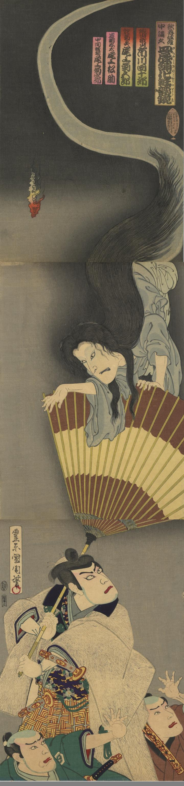

皿屋敷伝説のお菊の霊が上から現われている。火の玉も出ている。
著作者：豊原國周／出典：親書誌：U426_nichibunken_0402：歌舞伎座中滿久皿屋舗化粧姿鏡；カブキザ ナカマク サラヤシキ ケショウ ノ スガタエ／日付：2015／資源識別子：U426_nichibunken_0402_0001_0000
Copyright (c)2010- International Research Center for Japanese Studies, Kyoto, Japan. All rights reserved.